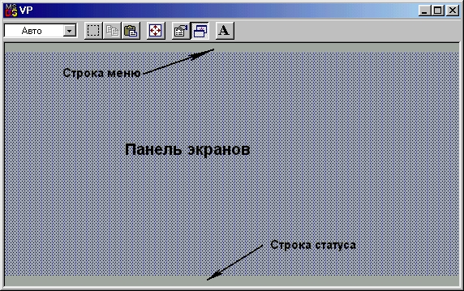

|
|
|
|
Группы видимых элементов
Абстрактная группа
Абстрактная группа - это объект TGroup. Этот объект, вообще говоря, не является абстрактным, однако его экземпляры практически никогда не используются в программах: основное назначение объекта - служить основой иерархии родственных объектов пользователя. Хотя группа владеет прямоугольным участком экрана, она становится видимой только за счет визуализации своих элементов. Элементы группы организуются в связанный список: каждый элемент имеет поле Owner, содержащее указатель на своего владельца, и поле Next, с помощью которого указывается следующий элемент списка.
Панель экрана
Панель экрана - это объект TDesktop, создающий фоновое изображение рабочей зоны экрана. TDesktop является прямым потомком TGroup и, следовательно, может владеть произвольным набором видимых элементов. Заполнение панели экрана осуществляется другими видимыми элементами, такими как TWindow, TDialog и т.п. Обычно владельцем группы TDesktop является программа - объект TApplication или его потомки.
Программы
Все программы, использующие средства Turbo Vision, должны порождаться от объекта TProgram или его единственного потомка TApplication. Оба объекта создают на экране стандартное изображение строки меню, панели- экрана и строки статуса, т.е. .являются владельцем группы, состоящей из TMenuBar, TDesktop и TStatusLine (рис. 16.4).
TApplication отличается от своего родителя только методами Init и Done, с помощью которых осуществляется инициация основных подсистем Turbo Vision и их закрытие:
Constructor TApplication.Init;
begin
InitMemory;
InitVideo;
InitEvents;
InitSysError;
InitHistory;
TProgam.Init
end;
Destructor TApplication.Done;
begin
TProgram.Done;
DoneHistory;
DoneSysError;
DoneEvents;
DoneVideo;
DoneMemory end;

Рис.16.4. Стандартная группа TProgram
Обычно программа пользователя связывается с экземпляром TApplication или его потомка. Если Вас не устраивает стандартная последовательность инициации и закрытия подсистем Turbo Vision, Вы должны создать и использовать потомка от TProgram.
Окна
Для создания и использования окон в Turbo Vision предусмотрен объект TWindow. Обычно этот объект владеет объектом TFrame и поэтому очерчивается прямоугольной рамкой со стандартными кнопками изменения размера и закрытия. Вы можете перемещать окно, изменять его размеры и закрывать, используя методы TView или перекрывая их собственными методами. Если окно имеет номер от 1 до 9, его можно сделать активным (выбрать) командными клавишами Alt-N, где N - номер окна. Если окно имеет несколько видимых элементов, его обработчик событий интерпретирует нажатие на клавиши Tab и Shift-Tab как команду активизации следующего (предыдущего) видимого элемента.
Диалоговые окна
Объект TDialog порожден от TWindow и предназначен для реализации взаимодействия с пользователем. В отличие от TWindow диалоговое окно не может изменять свой размер (но может перемещаться по экрану). Его обработчик событий генерирует команду cmCancel в ответ на нажатие клавиши Esc (или воздействие мышью на кнопку закрытия) и команду cmDefault в ответ на нажатие Enter.
|
|
|
|